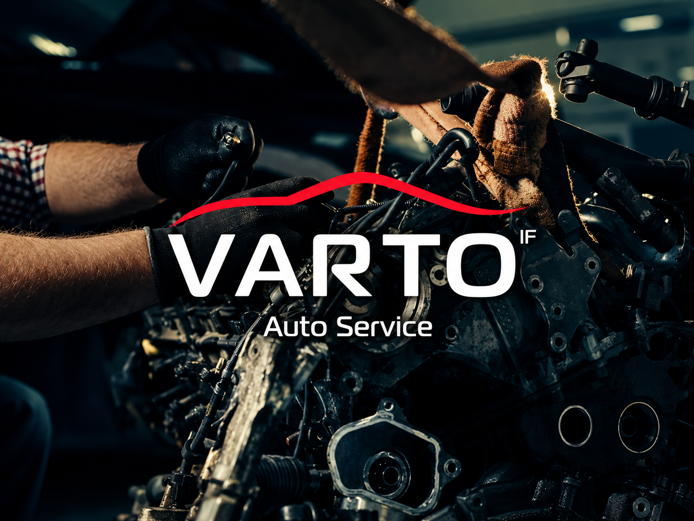

СТО / Шиномонтаж та автосервіс · Угринів
VARTO IF.
Шиномонтаж та автосервіс
с. Угринів, Калуське шосе, 7К. Зателефонуйте, щоб уточнити потрібні роботи та час приїзду.
067 492 1113VARTO IFУгринів

Фото сервісу
Перемикайте фото стрілками. Натисніть на знімок, щоб відкрити повністю.
01 / РОБОТИ СЕРВІСУ
Послуги
Вартість і можливість виконання потрібних робіт уточнюйте телефоном.
Заміна оливи та рідин
Ремонт двигуна й коробок передач
Ремонт гальмівної системи
Ціну уточнюйте за телефоном
Опишіть, що потрібно автомобілю, та уточніть вартість потрібних робіт.
02 / ІНФОРМАЦІЯ
Про сервіс
Перед приїздом
Зателефонуйте, щоб узгодити потрібні роботи та час приїзду.
Графік роботи
Пн–Пт 09:00–19:00; Сб 09:00–15:00; Нд вихідний
Вартість робіт
Ціну уточнюйте за телефоном.
03 / ДОСВІД КЛІЄНТІВ
Відгуки клієнтів
Вибрані позитивні відгуки. Посилання на оригінали — у футері.
Відгук клієнтаGoogle Maps
Допомога з шинами в дорозі
Проблема із шинами виникла під час поїздки до Івано-Франківська у вихідний день. Майстри оперативно допомогли продовжити дорогу.
Відгук клієнтаGoogle Maps
Хімчистка автомобіля
Постійні клієнти скористалися хімчисткою. Результатом роботи залишилися задоволені.
Відгук клієнтаАйдентика
Несправність повного приводу
За короткий час провели діагностику та усунули проблему з повним приводом. Після ремонту рекомендують звертатися до сервісу.
04 / КОНТАКТИ
Угринів, Калуське шосе, 7К
Карта потребує інтернету. Адреса й посилання на маршрут — поруч.
ТЕЛЕФОН СЕРВІСУ
Зателефонуйте нам
Уточніть доступні роботи, вартість
і час приїзду.